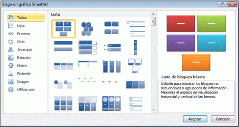

Animaciones de entrada
Animaciones de énfasis
Animaciones de salida
Animaciones de trayectorias.
Las animaciones de entrada sirven para hacer aparecer en pantalla objetos que hasta el momento permanecen ocultos.
Las animaciones de énfasis sirven para resaltar, directa o indirectamente, algún elemento de los que aparecen en pantalla.
Las animaciones de salida sirven para hacer desaparecer de la pantalla objetos que hasta el momento estaban visibles.
Las animaciones de trayectorias permiten desplazar objetos por la pantalla y su principal utilidad es la reordenación de los contenidos en la diapositiva.
Se aplica utilizando la expresión =SUMA(A1:A45), en este caso considerando que se quiere obtener el total que suman las celdas seleccionadas (de la A1 a la A45).
SUMAR SÍ funciona para establecer criterios a la hora de sumar valores,=SUMAR.SI(A1:A45,”>10000).
También se puede obtener la media de un conjunto de datos registrados en la hoja de cálculo, =PROMEDIO(A1:A365).
La función CONTAR cuenta la cantidad de celdas que contienen números y cuenta los números dentro de la lista de argumentos,=CONTAR(A1:A20). En este ejemplo, si cinco de las celdas del rango contienen números, el resultado es 5.
CONTAR.SI es una de las funciones estadísticas, para contar el número de celdas que cumplen un criterio; por ejemplo, para contar el número de veces que una ciudad determinada aparece en una lista de clientes,=CONTAR.SI(A2:A5,"Londres").
Gráfico SmartArt es una funcion Word de representación visual de sus datos e ideas. Puede crear uno eligiendo un diseño que se adapte a su mensaje. Algunos diseños (como los organigramas y los diagramas de Venn) representan clases específicas de datos, mientras que otros simplemente mejoran el aspecto de una lista con viñetas.
